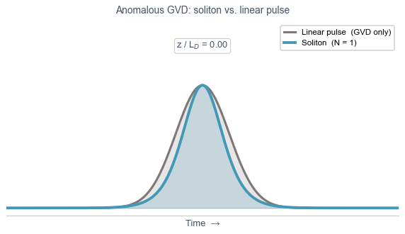

        <section>
          <h3>Group Velocity Dispersion of a Gas-Filled HCF</h3>

          <div style="display: flex; gap: 1.3em; align-items: center; margin-top: 0.3em; margin-bottom: 0.5em;">

            <div style="flex: 1.6; text-align: center; font-size: 0.50em;">
              $$\beta_2(\lambda) \approx \frac{\lambda^3}{4\pi c^2}
                \left[
                  \underbrace{\rho_r \frac{\partial^2 \chi_e}{\partial \lambda^2}}_{\text{material dispersion}}
                  -
                  \underbrace{\frac{u_{nm}^2}{2\pi^2 a^2}}_{\text{waveguide dispersion}}
                \right]$$
            </div>

            <div style="flex: 1.2; min-width: 0; display: flex; justify-content: center;">
              
            </div>

          </div>

          <div style="display: flex; gap: 1.0em; font-size: 0.41em;">
            <div class="col-box" style="flex: 1; border: 1px solid #ddd; border-radius: 8px; padding: 0.8em;">
              <h3>Material Dispersion</h3>
              <ul>
                <li>$\rho_r$ — gas density, set by fill pressure</li>
                <li>$\chi_e(\lambda)$ — susceptibility of the fill gas</li>
                <li>Always positive at optical wavelengths → <strong>normal</strong></li>
                <li>Increases linearly with pressure</li>
              </ul>
            </div>
            <div class="col-box" style="flex: 1; border: 1px solid #ddd; border-radius: 8px; padding: 0.8em;">
              <h3>Waveguide Dispersion</h3>
              <ul>
                <li>$u_{nm}$ — Bessel zero, fixed by mode (HE$_{11}$: $u_{11} = 2.405$)</li>
                <li>$a$ — core radius; dispersion scales as $1/a^2$</li>
                <li>Always negative → <strong>anomalous</strong></li>
                <li>Weakens for larger cores</li>
              </ul>
            </div>
            <div class="col-box" style="flex: 1; border: 1px solid #ddd; border-radius: 8px; padding: 0.8em;">
              <h3>Engineering the Dispersion</h3>
              <ul>
                <li>$\beta_2$ is the balance between the two terms</li>
                <li>$\lambda_\text{zd}$ tunable via gas pressure</li>
                <li>Pump red of $\lambda_\text{zd}$ → anomalous GVD → solitons</li>
                <li>Higher pressure shifts $\lambda_\text{zd}$ to shorter $\lambda$, tuning RDW</li>
              </ul>
            </div>
          </div>
          <p class="slide-footnote"><a href="https://doi.org/10.1038/s41566-019-0416-4"><em>Nat. Photonics</em> <strong>13</strong>, 547–554 (2019)</a></p>
          <aside class="notes">
            <ul>
              <li>Equation 1 from Travers et al., Nature Photonics 2019 — GVD of the HE_nm guided modes of a gas-filled hollow capillary fibre.</li>
              <li>Key insight: in glass fibre you cannot tune the dispersion. In a gas-filled HCF you continuously adjust β₂ via fill pressure, giving full control of soliton dynamics and RDW emission wavelength.</li>
            </ul>
          </aside>
        </section>
